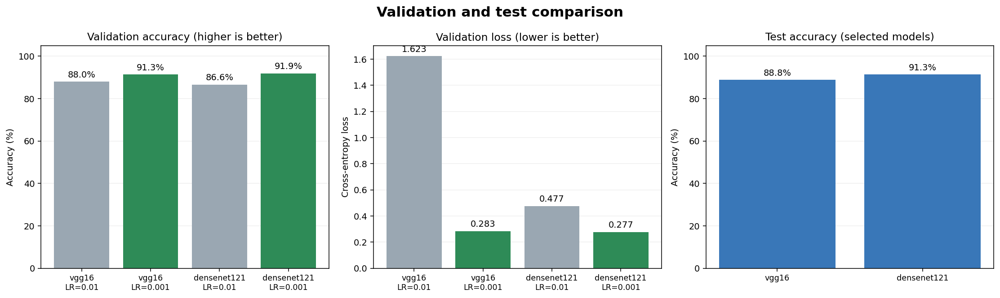

Ứng dụng học chuyển giao (VGG16, DenseNet121) để phân loại 37 giống chó, mèo trên bộ dữ liệu Oxford-IIIT Pet.
Học phần: Mạng nơ-ron tích chập và học chuyển giaoDataset: Oxford-IIIT PetBaseline: VGG16Giải pháp: DenseNet121
37giống chó và mèo
7,349ảnh · train / val / test
4cấu hình đã chạy
91.31%test accuracy · DenseNet121
PHẦN I
Đăng ký đề tài
1Tên đề tài
Ứng dụng học chuyển giao (VGG16, DenseNet121) để phân loại 37 giống chó, mèo trên bộ dữ liệu Oxford-IIIT Pet.
Công nghệ
Học chuyển giao từ mô hình pretrained ImageNet
Bài toán
Phân loại ảnh: 1 trong 37 giống chó/mèo
Phạm vi
Oxford-IIIT Pet; VGG16 và DenseNet121
2Hướng chính
Thị giác máy tính · Transfer Learning
Dùng VGG16 và DenseNet121 pretrained trên ImageNet, thay lớp phân loại cuối thành 37 lớp và so sánh kết quả trên cùng bộ dữ liệu.
Thị giác máy tínhTransfer Learning
Phạm vi: thực nghiệm và đánh giá mô hình; chưa triển khai ứng dụng thời gian thực.
3Người sử dụng và vấn đề
Người sử dụng
Nhu cầu
Sinh viên, giảng viên
Học, kiểm tra và đánh giá quy trình transfer learning cho phân loại ảnh
Người xem demo, thuyết trình
Xem quy trình huấn luyện và kết quả so sánh hai mô hình
Khó khăn hiện tại: nhiều giống trông gần giống nhau nên phân biệt bằng mắt có thể khó. Thay vì học tất cả tham số từ đầu, đề tài dùng lại mô hình đã huấn luyện trên ImageNet và chỉ huấn luyện lớp phân loại cuối.
Mô hình chỉ để tham khảo trong phạm vi học tập, không thay thế đánh giá của con người.
4Mục tiêu
Đầu ra cần đạt
Pipeline phân loại 37 lớp chạy được với cả VGG16 và DenseNet121.
Checkpoint tốt nhất theo validation loss và bảng results.csv.
So sánh DenseNet121 với baseline VGG16; so sánh LR 0.01 với 0.001.
Chỉ số đo lường
Validation loss: chọn checkpoint và cấu hình.
Validation accuracy: theo dõi trong lúc chọn.
Test loss, test accuracy: đánh giá cuối cho cấu hình đã chọn.
Project không đặt trước ngưỡng accuracy cần đạt; kết quả được báo cáo đúng như số đo trong results.csv.
Theo ghi nhận của nhóm: train/validation tách phân tầng 80/20 từ split trainval chính thức; test giữ split test chính thức. Bước chia không nằm trong mã nguồn nên không kiểm chứng độc lập được từ repo.
Quyền sử dụng
Trang dataset ghi giấy phép CC BY-SA 4.0; bản quyền ảnh thuộc chủ sở hữu gốc. Dữ liệu không có trong repository (dataset/ nằm trong .gitignore).
Phương án thay thế
Chưa thử bộ dữ liệu khác. Code đọc theo ImageFolder và lấy số lớp từ số thư mục, nên có thể dùng bộ dữ liệu khác có cùng cấu trúc train/val/test/<lớp>.
6Phạm vi
Phần bắt buộc — đã thực hiện
Hai mô hình pretrained ImageNet: VGG16 và DenseNet121; classifier 37 lớp, đóng băng backbone.
Điều chỉnh learning rate 0.01 và 0.001 (batch size cố định 16).
Ghi loss/accuracy theo epoch cho TensorBoard.
Chọn cấu hình bằng validation; chỉ đánh giá test cho cấu hình đã chọn.
Phần mở rộng
Fine-tune khối cuối (--fine-tune-last-block)
Có trong code, chưa dùng
Batch size 32
Code hỗ trợ, chưa chạy
Nhiều seed hoặc k-fold
Chưa thực hiện
Confusion matrix theo lớp
Chưa thực hiện
Ứng dụng hoặc API dự đoán
Chưa thực hiện
7Phương pháp
VGG16Baseline
Các tầng tích chập xếp tuần tự; dùng làm mô hình đối chiếu.
DenseNet121Giải pháp
Dense block nối và tái sử dụng đặc trưng giữa các tầng.
Hai mô hình dùng cùng dữ liệu, tiền xử lý, loss, optimizer, số epoch tối đa và cách chọn cấu hình, để so sánh hai backbone trong cùng điều kiện.
01 · Tiền xử lý224×224, chuẩn hoá ImageNet; augmentation chỉ ở train.
02 · Mô hìnhTrọng số ImageNet; thay lớp cuối thành 37 lớp; đóng băng backbone.
requirements.txt gồm torch, torchvision, tensorboard, Pillow; notebook và matplotlib chỉ cần khi mở notebook. Lần đầu tải trọng số pretrained cần Internet.
2. Chuẩn bị dữ liệu
Tải Oxford-IIIT Pet từ trang chính thức và sắp xếp như sau (code không tự chia dữ liệu; ba split phải có cùng 37 thư mục lớp):
Nếu bỏ --batch-sizes 16, chế độ --tune dùng mặc định batch size 16 và 32 (8 lần huấn luyện). Nên dùng thư mục output mới để không ghi thêm dòng vào results.csv hiện có. Xem toàn bộ tùy chọn bằng python src/main.py --help.
Mở địa chỉ TensorBoard in ra (thường là http://localhost:6006). Tag: Loss/train, Loss/train_eval, Loss/validation và Accuracy/…; Loss/test, Accuracy/test chỉ có ở cấu hình được chọn. Repository hiện chỉ có results.csv, chưa có event log và checkpoint.
14Demo
Demo dựa trên những gì project đã có
Demo
Cách chạy
Cần dữ liệu
Đọc results.csv, vẽ bảng và biểu đồ so sánh
Notebook, mục 15–16
Không
Kiểm tra split và nạp một batch thật bằng create_dataloaders
Lần demo 1 epoch nhóm đã chạy trước đó (DenseNet121, LR 0.001, batch size 16).
Đây là demo 1 epoch cũ dùng để kiểm tra pipeline, không phải kết quả cuối. Kết quả cuối ở mục 15.
15Kết quả so sánh với baseline
DenseNet121 so với baseline VGG16
Mỗi mô hình dùng cấu hình được chọn theo validation loss (LR 0.001, batch size 16), sau đó mới đánh giá trên 3,669 ảnh test.
VGG16Baseline · LR 0.001
88.80%
test accuracy
Test loss0.3450
Val acc91.34%
Val loss0.2831
DenseNet121Giải pháp · LR 0.001
91.31%
test accuracy · +2.51 điểm %
Test loss0.3236
Val acc91.88%
Val loss0.2767
Chỉ số
VGG16 (baseline)
DenseNet121
Chênh lệch
Validation loss ↓
0.2831
0.2767
−0.0063
Validation accuracy ↑
91.34%
91.88%
+0.54 điểm %
Test loss ↓
0.3450
0.3236
−0.0213
Test accuracy ↑
88.80%
91.31%
+2.51 điểm %
Tổng tham số
134,412,133
6,991,781
—
Cả 4 cấu hình đã chạy
Mô hình
LR
Epoch tốt nhất / đã chạy
Val loss ↓
Val acc ↑
Test loss
Test acc
Chọn theo val
VGG16
0.01
4 / 5
1.6225
87.96%
—
—
—
VGG16
0.001
4 / 5
0.2831
91.34%
0.3450
88.80%
✓
DenseNet121
0.01
1 / 4
0.4766
86.60%
—
—
—
DenseNet121
0.001
4 / 5
0.2767
91.88%
0.3236
91.31%
✓

Validation của 4 cấu hình (xanh lá: được chọn) và test của cấu hình được chọn.
DenseNet121 tốt hơn baseline VGG16 ở cả bốn chỉ số trong lần chạy này.
Cả hai mô hình đều chọn LR 0.001 vì validation loss thấp hơn LR 0.01.
DenseNet121 có ít tham số hơn; project chưa đo thời gian và bộ nhớ nên không kết luận về tốc độ.
Nguồn số liệu: outputs/reduced-experiments/results.csv. Chỉ cấu hình được chọn theo validation mới được đánh giá trên test. Kết quả chỉ phản ánh một split, seed 42 và các cấu hình đã thử.
16Phân tích lỗi và giới hạn
Phân tích dựa trên results.csv
Project không lưu dự đoán theo từng ảnh, nên chưa có confusion matrix hay phân tích lỗi theo từng giống.
Mô hình (được chọn)
Train-eval acc
Val acc
Train-eval − val
Test acc
Val − test
Ảnh test sai
VGG16
95.14%
91.34%
3.80 điểm %
88.80%
2.54 điểm %
411 / 3,669 (11.20%)
DenseNet121
95.95%
91.88%
4.07 điểm %
91.31%
0.58 điểm %
319 / 3,669 (8.69%)
Lỗi trên test: VGG16 dự đoán sai 411 ảnh, DenseNet121 sai 319 ảnh trên 3,669 ảnh test.
Khoảng cách train-eval và validation: 3.80 và 4.07 điểm phần trăm; train-eval loss cũng thấp hơn validation loss. Một split và một seed chưa đủ để khẳng định mô hình có hay không overfit.
Từ validation sang test: accuracy giảm 2.54 điểm (VGG16) và 0.58 điểm (DenseNet121); nguyên nhân chưa được phân tích.
Learning rate 0.01: VGG16 có validation loss 1.6225 dù validation accuracy vẫn 87.96%; DenseNet121 đạt validation loss tốt nhất ở epoch 1 rồi dừng sớm ở epoch 4. Chọn theo validation loss đã loại cả hai cấu hình này.
Giới hạn và hướng tiếp tục
Giới hạn
Hướng tiếp tục
Một seed (42), một split
Chạy thêm seed hoặc k-fold để đánh giá độ ổn định
Batch size chỉ có 16
Thử batch size 32 (code đã hỗ trợ)
Tối đa 5 epoch, chạy trên CPU; chưa đo thời gian/bộ nhớ
Đo thời gian và tài nguyên khi so sánh
Chưa có confusion matrix, precision/recall theo lớp
Lưu dự đoán theo ảnh để phân tích các giống hay bị nhầm
SHA-256 chỉ phát hiện ảnh trùng byte-identical
Kiểm tra thêm ảnh gần giống
Bước chia train/validation không có trong mã nguồn
Đưa bước chia vào code để kiểm chứng lại được
Repository chưa có event log TensorBoard và checkpoint
Chạy lại thí nghiệm theo mục 13 để tạo
17Kết luận
DenseNet121 đạt 91.31% test accuracy, cao hơn baseline VGG16 2.51 điểm phần trăm
Nhóm đã xây dựng pipeline phân loại 37 giống chó/mèo bằng transfer learning: kiểm tra split dữ liệu, tiền xử lý ảnh, augmentation chỉ ở train, thay classifier và đóng băng backbone, huấn luyện bằng CrossEntropyLoss và Adam, chọn checkpoint và cấu hình theo validation loss, rồi mới đánh giá test.
Trong 4 cấu hình đã chạy, DenseNet121 (LR 0.001, batch size 16) đạt test accuracy 91.31%, so với 88.80% của VGG16. Kết luận chỉ phản ánh split, seed và cấu hình đã thử; cần thêm batch size, seed và lần chạy để đánh giá độ ổn định.